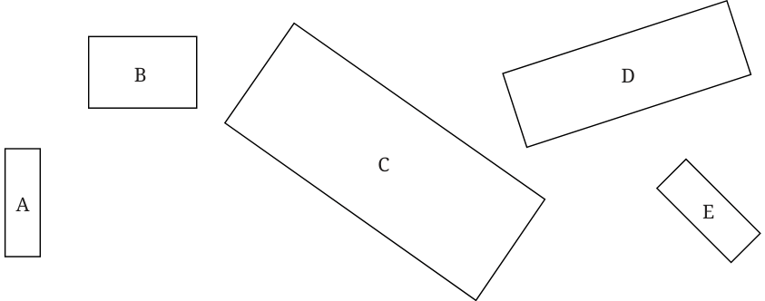
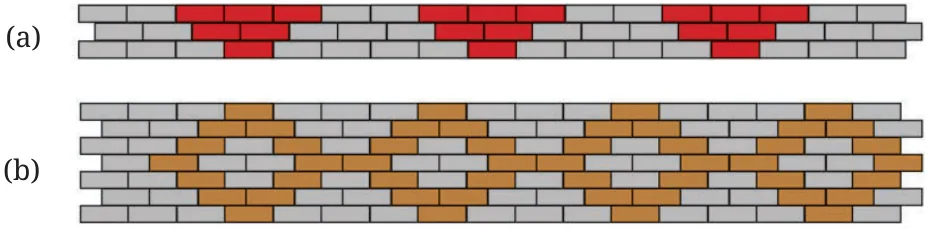

- Circle the following statements of proportion that are true.
- 4 : 7 :: 12 : 21 (ii) 8 : 3 :: 24 : 6
- 7 : 12 :: 12 : 7 (iv) 21 : 6 :: 35 : 10
- 12 : 18 :: 28 : 12 (vi) 24 : 8 :: 9 : 3
- Give 3 ratios that are proportional to 4 : 9. ______ : ______ ______ : ______ ______ : ______
- Fill in the missing numbers for these ratios that are proportional to 18 : 24.
3 : ______ 12 : ______ 20 : ______ 27 : ______

- Look at the following rectangles. Which rectangles are similar to each other? You can verify this by measuring the width and height using a scale and comparing their ratios.

- Look at the following rectangle. Can you draw a smaller rectangle and a bigger rectangle with the same width to height ratio in your notebooks? Compare your rectangles with your classmates’ drawings. Are all of them the same? If they are different from yours, can you think why? Are they wrong?
- The following figure shows a small portion of a long brick wall with patterns made using coloured bricks. Each wall continues this pattern throughout the wall. What is the ratio of grey bricks to coloured bricks? Try to give the ratios in their simplest form.


- Let us draw some human figures. Measure your friend’s body - the lengths of their head, torso, arms, and legs. Write the ratios as mentioned below - head : torso ______ : ______
torso : arms
______ : ______
torso : legs
______ : ______
Now, draw a figure with head, torso, arms, and legs with equivalent ratios as above.
Does the drawing look more realistic if the ratios are proportional? Math Why? Why not? Talk
Note to the Teacher: In all these activities, encourage students to reason why their drawings are proportional.